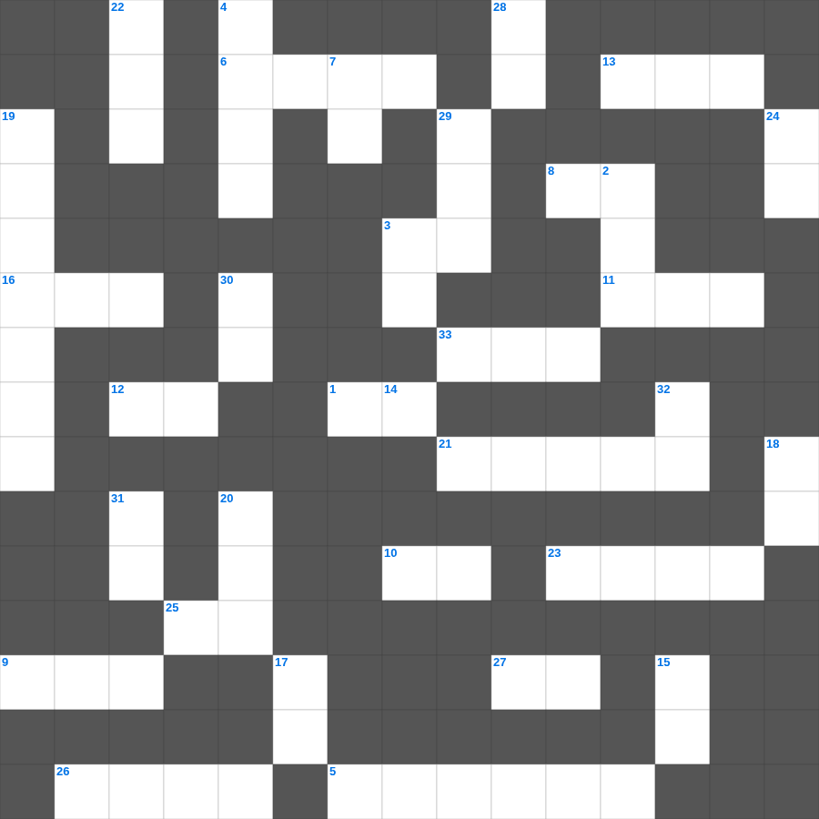

예레미야 마스터 100 (1/2)
📌 서비스 정의
십자가로세로는 교회 주보와 주일학교에서 사용할 수 있는 성경 기반 가로세로 퍼즐 서비스입니다. 성경 인물, 사건, 핵심 구절을 바탕으로 제작되었습니다. 온라인 풀이 및 인쇄 기능을 제공합니다.
📖 예레미야란?
예레미야는 유다의 멸망을 눈물로 예언한 '눈물의 선지자'의 메시지를 담은 책으로, 회개의 촉구와 새 언약에 대한 소망을 함께 전합니다.
📚 예레미야의 주요 사건·주제
예레미야의 소명 · 거짓 선지자들과의 대립 · 유다의 멸망 예언 · 새 언약 예언(예레미야 31장) · 예루살렘 함락
예레미야의 말씀을 퀴즈로 배우는 예레미야 주일학교 퀴즈입니다. 가로 힌트와 세로 힌트를 보고 35개의 단어를 맞춰보세요. 인쇄도 가능하고 정답 확인도 바로 되니 소그룹 모임이나 가정 예배 시간에도 활용하실 수 있습니다.

📝 가로 힌트
1. 빌레몬서에 나타난 바울의 나이 묘사: 나이가 이것 나 바울
3. 보아스가 성문에서 만난 사람 '아무개여 이것으로 오라'
5. 지붕을 뚫고 내려온 병자를 고치신 사건
6. 사무엘을 키운 엘리 제사장의 다른 아들
8. 베드로전서의 장 수
9. 예수께서 바다 위로 걸어오실 때 보고 무서워 배에서 내려 물 위로 걷다가 빠진 제자
10. 한 입에서 찬송과 이것이 나오는도다
11. 믿음의 기도는 병든 자를 구원하리니 주께서 그를 이것하시리라
12. 부정한 짐승의 이것을 만지면 저녁까지 부정함
13. 부정적인 정탐꾼들이 자신들을 비유한 말
16. 니고데모와 예수님의 대화 주제
21. 할례나 무할례가 아무것도 아니로되 오직 이것 함을 받는 것만이 중요하니라
23. 롯의 아내가 뒤를 돌아보다 변한 것
25. 증인의 수 '두 세 이것의 입으로 확정할 것이니라'
26. 솔로몬의 일천 번제
27. 새로 장가든 남자는 일 년 동안 이것을 면제함
33. 성벽 재건을 가장 심하게 방해한 호론 사람
📝 세로 힌트
2. 하나님이 형통과 곤고를 병행하게 하사 사람이 그의 이것을 능히 헤아려 알지 못하게 하셨느니라
3. 서원한 것은 반드시 이것해야 함
4. 지혜로운 여인, 나발의 아내였다가 다윗의 아내가 됨
7. 아담의 아내, 인류 최초의 여자
11. 유다서 1장 15절: 경건하지 않은 이것과 주를 거슬러 한 모든 완악한 말
14. 베드로가 미문 앞에 앉은 앉은뱅이에게 한 말: 이것과 금은 내게 없거니와 내게 있는 이것을 네게 주노니
15. 두 마음을 품어 모든 일에 이것이 없는 자로다
17. 빌립보 사람들아 너희도 알거니와 복음의 시초에 내가 마게도냐를 떠날 때에 주고받는 내 일에 참여한 이것이 너희 외에 아무도 없었느니라
18. 성령의 검은 곧 하나님의 이것
19. 유다서 1장 13절: 수치의 거품을 뿜는 무엇에 비유했나
20. 너희 중에 심지어 음행이 있다 함을 들으니 그런 음행은 이것들 중에서도 없는 것이라
22. 정탐꾼들이 가져온 포도 송이가 너무 커서 이것에 꿰어 맴
24. 예수님이 광야에서 40일간 받으신 것
28. 깨끗한 양심에 이것의 비밀을 가진 자라야 할지니라
29. 네가 이것처럼 높이 오르며 별 사이에 깃들일지라도 내가 거기에서 너를 끌어내리리라
30. 그 안에서 너희도 진리의 말씀 곧 너희의 구원의 복음을 듣고 그 안에서 또한 믿어 약속의 이것으로 인치심을 받았으니
31. 다윗이 골리앗을 쓰러뜨린 무기
32. 불의한 재판장과 과부 비유의 주제: 항상 기도하고 이것 하지 말아야 할 것
🧩 이 퍼즐에서 배우는 내용
이 퍼즐은 예레미야 마스터 100 (1/2)의 핵심 단어와 개념을 자연스럽게 복습할 수 있도록 구성되었습니다. 주일학교 수업이나 개인 성경공부에서 학습 내용을 점검하는 용도로 바로 활용할 수 있습니다.
🧑🏫 교회 교육 자료 활용
이 퍼즐은 주일학교 교재 추천 자료로 활용할 수 있고, 주일학교 주보에 넣기 좋은 분량으로 구성되어 있습니다. 수업용 주일학교 교안에 활동지로 붙이거나, 예배 후 복습용 주일학교 공과교재로 바로 사용할 수 있습니다.
🏷️ 키워드
예레미야 주일학교 퀴즈, 예레미야, 십자가로세로, 성경퀴즈, 말씀퀴즈, 가로세로퍼즐, 주일학교 교재 추천, 주일학교 주보, 주일학교 교안, 주일학교 공과교재